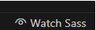
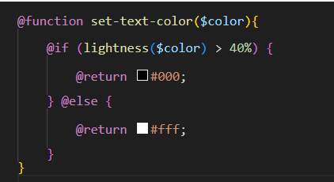
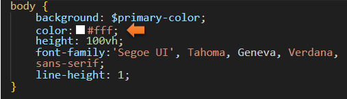
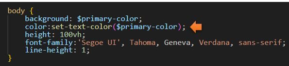
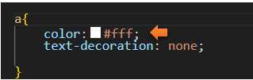
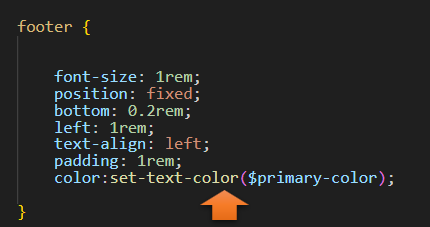
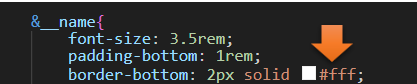
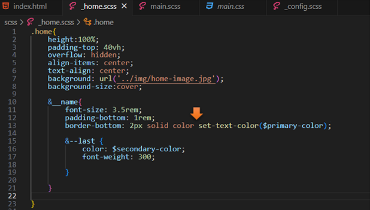

~5 Creating a Function ~
8/5/2024
How do we call this new function?
Search document for all other color property code
Now go to the _home.scss file Searching for color codes
Turn on Sass
Remember to turn on your Watch Sass

We want to be able to create a function to give an appropriate color to text based on the lightness of a color.
Write a Function
Inside of the _config.scss file, right under the @ mixin for the transition that we just wrote, we are going to write a function. This function will take an argument of color inside of its parenthesis. It is going to be manipulating things based on the lightness of a color. In order to do this, we will be using an if statement.
@function set-text-color($color){
@if (lightness($color) > 40%) {
@return #000;
} @else {
@return #fff;
}
}

How do we call this new function?
Don’t forget that a function is 2 parts. We need to write the function itself, and then we need to call this function to be able to use it somewhere else.
Go to the main.scss file, this is where we will be using that function.
We will be using that function in the body rule of the main.scss file.
This is what the original code looks like, we use the property of color: and then we just use the color.
Original

Using the new Function
Notice how we use the dollar sign with the name of the function, inside of the parenthesis below.
color:set-text-color($primary-color);

Search document for all other color property code
Now what we want to do is to search through our code for everywhere we have the color property.
Original

Using the new Function
a{
color:set-text-color($primary-color);
text-decoration: none;
}
7
footer {
font-size: 1rem;
position: fixed;
bottom: 0.2rem;
left: 1rem;
text-align: left;
padding: 1rem;
color:set-text-color($primary-color);
}

Now go to the _home.scss file Searching for color codes
Since we also had a color property set for our border, on the home page we must change that too.
Original

Using the new Function
&__name{
font-size: 3.5rem;
padding-bottom: 1rem;
border-bottom: 2px solid color set-text-color($primary-color);
*Notice here that we do not use the colon after solid color, as we had done previously with color when setting the attribute.

If we test the page now, we will not actually see any difference. Our page had already been working perfectly with the lightness of the text. It will only trigger if we have a page that doesn’t play that nice with the color of the fonts.